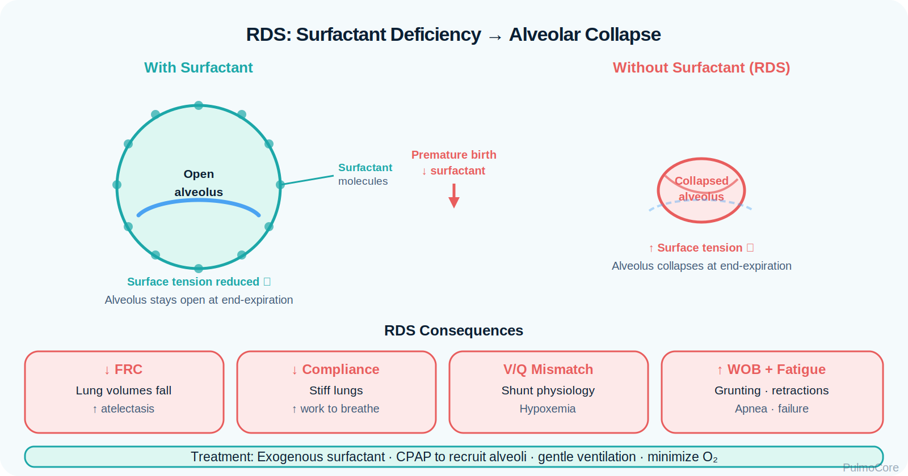
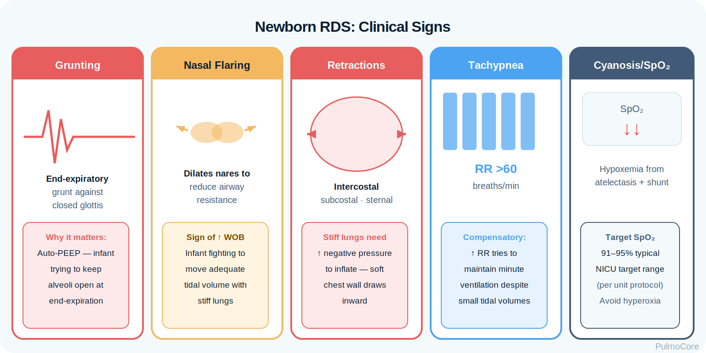
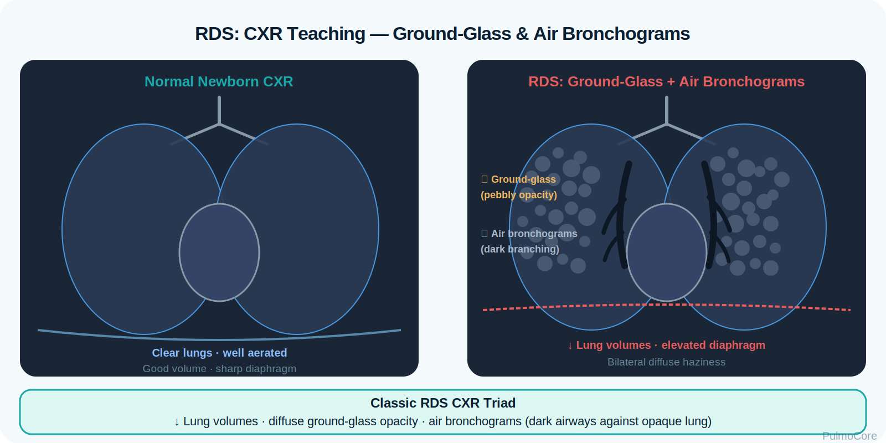

Newborn respiratory distress syndrome is a surfactant-deficiency disorder most common in premature infants. This module focuses on RT recognition of low compliance, atelectasis, grunting, oxygenation failure, CPAP escalation, surfactant therapy, blood gas interpretation, and neonatal respiratory support decisions.
Category Neonatal Respiratory Disease
Estimated Time 30–40 minutes
Level Core RT Knowledge
Learning Objectives
By the end of this newborn RDS module, learners should be able to connect surfactant deficiency, alveolar collapse, low compliance, clinical presentation, diagnostic data, respiratory support, and escalation priorities.
1. Explain pathophysiology Describe how surfactant deficiency increases surface tension, causes atelectasis, decreases compliance, and impairs oxygenation.
2. Recognize clinical patterns Identify grunting, nasal flaring, tachypnea, retractions, cyanosis, and increasing oxygen requirement in a premature newborn.
3. Interpret diagnostics Use CXR, blood gas trends, pre/postductal SpO₂, glucose/temperature data, and differential diagnosis to guide care.
4. Escalate appropriately Recognize failure of CPAP, persistent hypoxemia, apnea, rising CO₂, exhaustion, and need for surfactant or invasive support.
Video Overview
2-Minute Respiratory Distress Syndrome Overview
Watch this quick overview before moving into the disease snapshot.
Disease Snapshot
Newborn RDS is primarily a disease of prematurity. Immature type II pneumocytes do not produce enough surfactant, so alveoli collapse at end expiration. The newborn must generate more pressure to reopen collapsed alveoli, increasing work of breathing and worsening gas exchange.
What it is: Surfactant-deficiency disorder causing diffuse alveolar instability.
RT priority: Maintain oxygenation, support FRC with CPAP/PEEP, monitor ventilation, and escalate early.
RT Clinical Connection
For RTs, newborn RDS is a distending-pressure problem. The infant often needs CPAP or PEEP to keep alveoli recruited, careful oxygen titration, frequent reassessment, and collaboration for surfactant administration when support needs rise.
Board Prep Frame
Immediately associate newborn RDS with prematurity, surfactant deficiency, atelectasis, low compliance, grunting, retractions, ground-glass CXR, air bronchograms, CPAP, PEEP, and surfactant replacement.
Quick Pre-Check
Start with the core newborn RDS pattern
Which statement best describes the primary pathophysiologic problem in newborn RDS?
Anatomy & Pathophysiology
Surfactant lowers alveolar surface tension. Without enough surfactant, small alveoli collapse at end expiration. This decreases FRC, reduces compliance, creates diffuse atelectasis, and causes V/Q mismatch. The infant compensates with tachypnea, retractions, and grunting to generate auto-distending pressure.
Prematurity → immature type II pneumocytes → surfactant deficiency → increased surface tension → alveolar collapse → low compliance + low FRC → hypoxemia → fatigue and ventilatory failure risk.

Visual Learning: Use this image placeholder for a cause → effect diagram showing surfactant deficiency and alveolar collapse.
What Changes During Newborn RDS
RDS Change
What Happens
Why It Matters
Surfactant deficiency
Alveoli have high surface tension.
Alveoli collapse more easily during exhalation.
Diffuse atelectasis
Many lung units are poorly aerated.
Creates shunt-like physiology and hypoxemia.
Low compliance
The lungs are stiff.
Newborn must work harder to generate tidal volume.
Low FRC
Less gas remains after exhalation.
Worsens derecruitment and oxygen instability.
V/Q mismatch
Perfused areas are poorly ventilated.
Oxygen requirement rises.
Danger Sign
A premature infant with worsening retractions who becomes apneic, bradycardic, limp, or less responsive is not improving. That pattern suggests exhaustion and possible respiratory failure.
Click the Newborn RDS Hotspots
Click each hotspot to reveal how that structure contributes to newborn RDS.
Start here: Click all four hotspots to complete this activity.
0 / 4 hotspots reviewed
Etiology, Risk Factors & Differentials
Newborn RDS is strongly associated with prematurity, but RTs must also consider other causes of neonatal respiratory distress such as transient tachypnea, meconium aspiration, pneumonia/sepsis, pneumothorax, congenital heart disease, and PPHN.
Choose the best category for each item, then check your answers.
Prematurity at 28 weeks
CPAP to recruit alveoli
Maternal diabetes
Apnea with bradycardia
Exogenous surfactant
Complete the sorting activity to continue.
Clinical Manifestations
RDS usually appears soon after birth and worsens over the first hours if untreated. RT assessment should focus on respiratory effort, air entry, oxygen need, color, temperature, perfusion, apnea/bradycardia events, and response to CPAP or surfactant.

Visual Learning: Use this image placeholder to label grunting, flaring, retractions, and tachypnea.
Finding Type
What the RT May See
Breathing pattern
Tachypnea, shallow breathing, apnea, grunting.
Appearance
Nasal flaring, intercostal/subcostal retractions, cyanosis, poor tone when severe.
Breath sounds
Fine crackles, decreased air entry, or poor aeration with worsening disease.
Improved SpO₂, reduced retractions/grunting, lower FiO₂ need after CPAP or surfactant.
Diagnostics & Assessment
Diagnostic data helps confirm RDS severity, identify alternative diagnoses, and guide escalation. Interpret the infant’s clinical picture together with gestational age, timing of onset, CXR, oxygen need, and blood gas trends.
Chest X-ray

Visual Learning: Use this image placeholder for the high-yield CXR pattern: low lung volumes, diffuse ground-glass appearance, and air bronchograms.
Test or Finding
RDS Pattern
CXR
Diffuse reticulogranular or ground-glass appearance, air bronchograms, low lung volumes.
ABG/CBG
Hypoxemia; rising PaCO₂ and acidosis as fatigue or failure develops.
Pulse oximetry
Used for target range monitoring and oxygen titration.
Pre/postductal SpO₂
Helps evaluate shunting or PPHN when hypoxemia is disproportionate.
Glucose and temperature
Hypoglycemia or cold stress can worsen distress and oxygen use.
Sepsis evaluation
Consider if infection risk, instability, abnormal temperature, or poor perfusion.
ABG Pattern
Early RDS often presents with hypoxemia from atelectasis and V/Q mismatch. Worsening ventilation appears as rising PaCO₂ and respiratory acidosis, especially when the infant tires or has apnea.
Severity Classification & Oxygen Need
Severity is judged by work of breathing, oxygen requirement, CPAP/PEEP need, blood gas trend, apnea/bradycardia events, and radiographic findings. Rising FiO₂ need despite adequate CPAP should trigger reassessment and possible surfactant/escalation discussion.
Mild Tachypnea and mild retractions; stable oxygenation on low support.
Moderate Persistent grunting/retractions; increasing FiO₂ or CPAP need.
Severe Apnea, acidosis, rising CO₂, bradycardia, or refractory hypoxemia.
Oxygen Escalation Activity
A 29-week infant on CPAP has increasing retractions and now needs FiO₂ 0.45 to maintain target SpO₂. What is the best RT interpretation?
Severity & Red Flags
The key question is whether the infant can maintain oxygenation and ventilation without exhausting. Neonates can deteriorate quickly, so worsening clinical status should be escalated early.
Red Flag
Why It Matters
Apnea, bradycardia, or poor tone
Suggests exhaustion or severe instability.
Rising PaCO₂ or falling pH
Indicates worsening ventilation.
Increasing FiO₂ despite CPAP
May indicate worsening atelectasis, need for surfactant, or alternate diagnosis.
Severe retractions or persistent grunting
High work of breathing and risk of fatigue.
Sudden asymmetry or deterioration
Assess for pneumothorax or equipment problem.
Pre/postductal saturation split
Consider PPHN or ductal shunting physiology.
Management & Treatment
RDS management supports alveolar recruitment, oxygenation, ventilation, temperature control, glucose stability, and surfactant replacement when indicated. The least invasive effective support is preferred, but delayed escalation can be dangerous.
Escalation is needed when noninvasive support cannot maintain oxygenation and ventilation or when the infant develops apnea, acidosis, rising CO₂, or exhaustion.
Surfactant concept: Improves alveolar stability and compliance; oxygen and pressure needs may change quickly after dosing.
Vent concept: Use lung-protective support: adequate PEEP, avoid overdistention, monitor pressures and blood gases.
Board Pearl
For board-style questions, CPAP is often the initial support for a spontaneously breathing premature infant with RDS. Surfactant is considered when oxygen/support needs increase or disease is moderate to severe, and invasive ventilation is used for apnea, severe acidosis, or failure of noninvasive support.
Respiratory Therapist Role
The RT is central to neonatal stabilization, CPAP setup, oxygen titration, blood gas monitoring, surfactant support, ventilator management, family-safe communication, and early recognition of deterioration.
RT Task
What to Assess or Do
Why It Matters
Assess WOB
RR, retractions, grunting, flaring, apnea.
Tracks severity and fatigue risk.
Support FRC
Set up CPAP/PEEP and monitor interface seal.
Keeps alveoli recruited.
Titrate oxygen
Adjust FiO₂ to ordered neonatal target SpO₂ range.
Balances hypoxemia treatment with oxygen-toxicity risk.
Monitor ventilation
ABG/CBG, transcutaneous CO₂, apnea events.
Detects ventilatory failure.
Assist surfactant
Prepare equipment, support delivery, monitor response.
Can rapidly change compliance and oxygenation.
Guided Unfolding Case Study
The Premature Newborn Who Is Working Harder
This guided case reveals one clinical stage at a time. Learners make an RT decision, receive feedback, and then continue to the next stage.
Stage 1: Initial Presentation
A 29-week infant is 20 minutes old with tachypnea, grunting, nasal flaring, and subcostal retractions.
RR 74/min
SpO₂ 84% in room air
Breath Sounds Fine crackles, reduced aeration
Decision Question: What is the priority RT action?
Stage 2: Diagnostic Pattern
The CXR shows low lung volumes with diffuse ground-glass opacities and air bronchograms. The infant remains on CPAP.
Decision Question: What does this pattern most strongly support?
Stage 3: Oxygen Need Rises
After 45 minutes on CPAP, the infant still has severe retractions. FiO₂ has increased to 0.50 to maintain the target SpO₂ range.
Decision Question: What is the best next RT recommendation?
Stage 4: Ventilation Worsens
The infant develops apnea and bradycardia. Blood gas shows worsening respiratory acidosis with rising CO₂.
Decision Question: What does this indicate?
Case Wrap-Up
RT Takeaway: In newborn RDS, improvement is measured by reduced work of breathing, stable oxygen need, better aeration, appropriate blood gas trend, and fewer apnea/bradycardia events.
If the infant worsens: apnea, bradycardia, rising PaCO₂, falling pH, and increasing FiO₂ suggest CPAP failure and need urgent escalation.
Knowledge Check
Board-Style Practice
Answer each question to complete this activity. Answer choices shuffle each time the lesson opens.
Question 1
A 30-week infant develops tachypnea, grunting, and retractions shortly after birth. CXR shows diffuse ground-glass appearance and air bronchograms. What is the most likely cause?
Question 2
Which finding is most concerning in a premature infant with RDS?
Question 3
What is the main purpose of CPAP in newborn RDS?
Question 4
After surfactant administration, what should the RT be ready to monitor closely?
0 / 4 questions answered
FAQ
Common Newborn RDS Questions
What is the simplest way to understand newborn RDS?
It is a surfactant-deficiency disease. Without enough surfactant, alveoli collapse, compliance falls, and the infant must work harder to breathe.
Why do premature infants get RDS?
Premature infants have immature type II pneumocytes, so surfactant production may be inadequate for stable alveolar inflation after birth.
Why does grunting happen?
Grunting is the newborn’s attempt to create end-expiratory pressure and keep alveoli open.
How does CPAP help?
CPAP provides distending pressure, improves FRC, reduces atelectasis, and can decrease work of breathing in a spontaneously breathing infant.
What CXR findings are high yield?
Classic RDS findings include low lung volumes, diffuse ground-glass or reticulogranular appearance, and air bronchograms.
When should escalation be considered?
Escalation should be considered with increasing FiO₂ need, severe WOB, apnea, bradycardia, rising CO₂, worsening acidosis, or failure to respond to CPAP.
What happens after surfactant?
Compliance and oxygenation may improve quickly, so RTs must monitor SpO₂, pressures, ventilation, and need for support adjustment.
Summary & Clinical Pearls
Newborn RDS is a surfactant-deficiency disorder that causes alveolar collapse, decreased FRC, low compliance, increased work of breathing, and impaired gas exchange. RT care centers on early recognition, oxygen titration, CPAP/PEEP, surfactant support, blood gas trending, and early escalation when the infant shows signs of failure.
Must know: Prematurity + early distress + ground-glass CXR = think RDS.